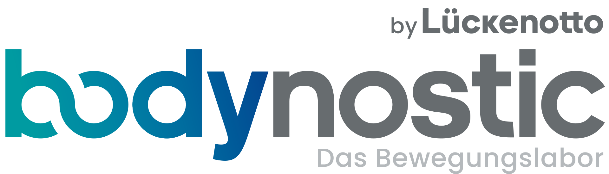
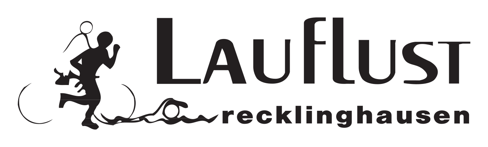

Menschen, Geschichte und Partner des RLC 1952.
Diese Seite bündelt den aktuellen Vorstand, Partner und wichtige Vereinsinformationen. Satzung, Schutzkonzept, Ehrenkodex und weitere Unterlagen werden ergänzt, sobald sie final freigegeben sind.
Unser Vorstand und Team.
Marc Manderla
2. Vorstand · 2. Kassierer
Stephen Wandelt
1. Kassierer
Ludger Zander & Carsten Praßni
Sportwarte
Leni Nefedev & Helge Meise
Jugendwarte
Mike Wickert
Pressewart und Öffentlichkeitsarbeit
Christina Sip
Schutzbeauftragte gegen sexualisierte Gewalt
Carsten Praßni
Datenschutzbeauftragter
Die Historie des Vereins wird von der bestehenden RLC-Seite übernommen und später fortgeschrieben.
Satzung, Schutzkonzept, Ehrenkodex, Mitgliedsbeiträge und JHV-Protokolle werden erst nach finaler Freigabe verlinkt.
Ob Trainerinnen und Trainer mit Foto und Daten erscheinen oder nur als Kontakt, wird separat geklärt.
Unsere Partner.

bodynostic by Lückenotto – das Bewegungslabor
Begleitet den Verein als sichtbarer Partner rund um Bewegung, Events und Vereinsalltag.
Partnerseite öffnenSparkasse Vest Recklinghausen
Unterstützt den regionalen Sport und die Vereinsarbeit vor Ort.
Partnerseite öffnen
Lauflust Recklinghausen
Partner mit Bezug zu Laufkultur, Bewegung und regionalem Sport.
Partnerseite öffnenFragen zu Verein, Vorstand oder Partnern?
Der zentrale Kontakt bleibt info@rlc1952.de. Weitere offizielle Unterlagen werden nach Freigabe ergänzt.